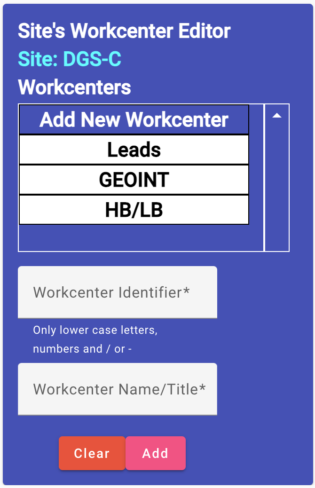
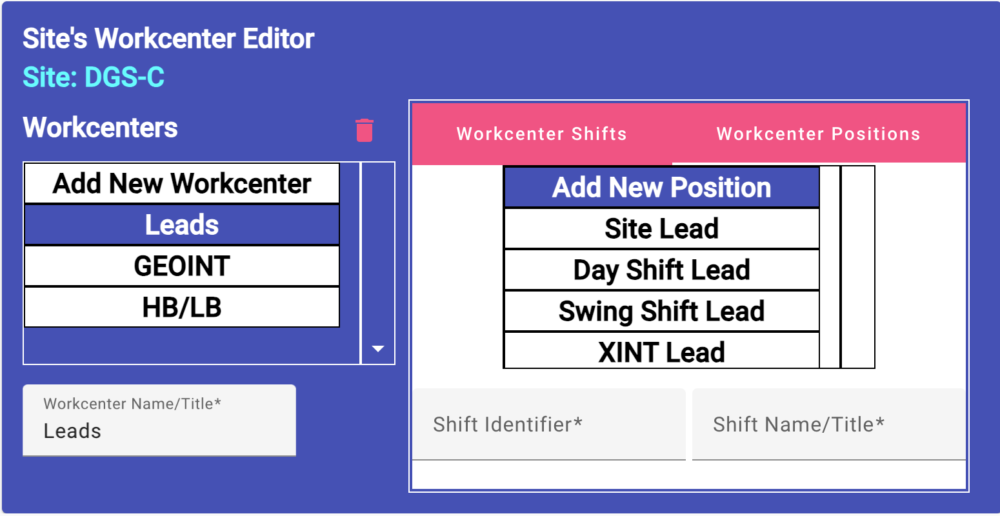
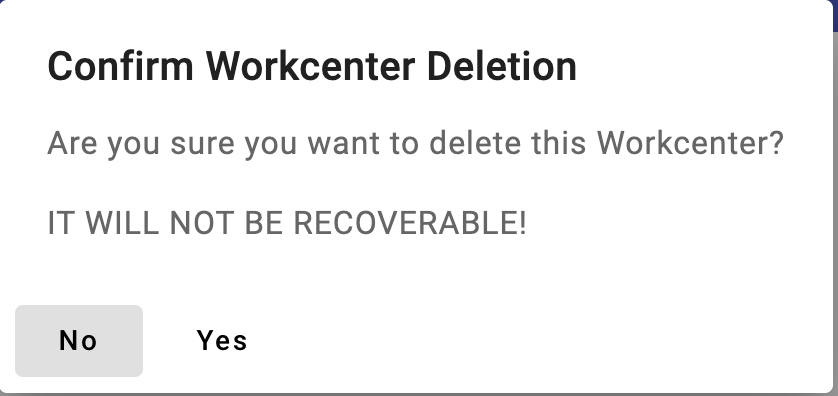
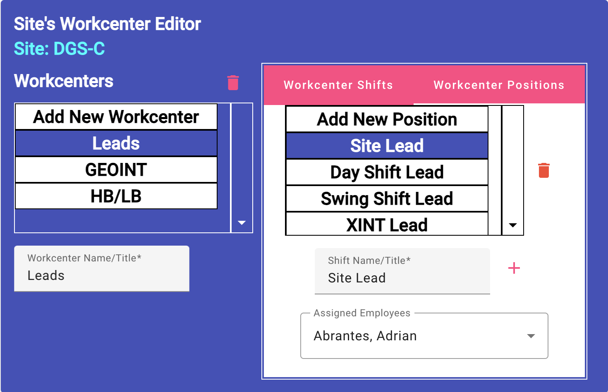
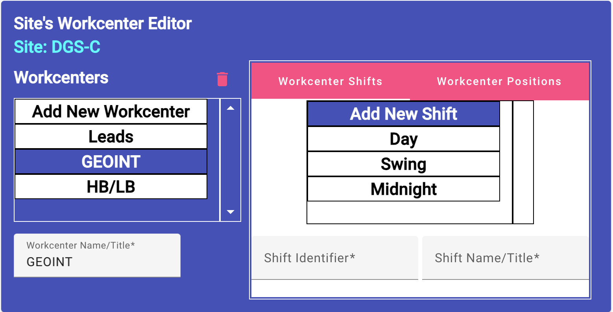
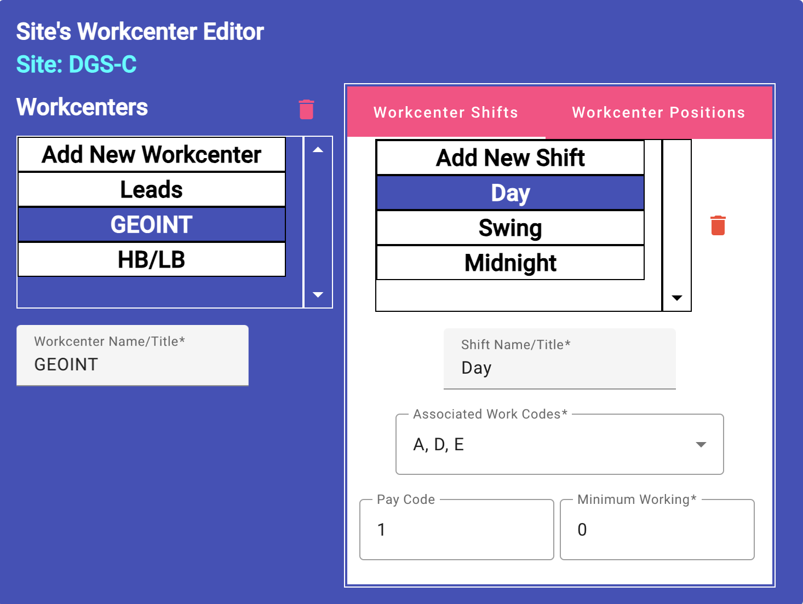
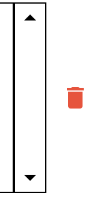

Site Workcenter Editing
(Site Scheduler/Leadership only)
The workcenter is the intermediate level of separation at the site. It is
assumed that the site will have an admin or leads workcenter, plus two or
three other workcenters. The overall site schedule is produced by
workcenter. Each workcenter can be created with multiple
shifts and/or positions. The shift is a designated work period for multiple
employees (example: Day shift might cover the period from 6am to 4pm.) In
contrast, a position is usually assigned to an individual, regardless of the
work period.

-
Add a New Workcenter
-
Select "Add New Workcenter" from the list under "Workcenters".
The display will change and show two fields for editing, the
workcenter's identifier and name or title, both are required.
-
Type in the identifier for the workcenter. This is normally a short
string to use as an identifier. It will be saved in lower-case
letters.
-
Type in the display name or title for the workcenter.
-
Click the "Add" button to save the workcenter at the end of the
current list. The "Clear" button can be clicked before adding to
remove all data from the two fields.

-
Edit Workcenter
- Select the workcenter you want to edit. The only field editable
is the workcenter's display name/title.
-
Type in the changes to the name/title you need to make. The changes
will be saved as you exit the field.
-
Changing the Workcenter Display Order
-
Select the workcenter whose order you want to move up or down. The
arrows to move up/down the list will display depending on the
position of the workcenter within the list.
-
Click the Up or Down Arrow button to move the workcenter up or down
the list. After clicking the button, the new display order will be
shown.
-
Delete a Workcenter
-
Select the workcenter you want to delete.

-
Click the red trashcan icon above the list to start the process. A
deletion dialog will be displayed. Click the "Yes" bottom to
complete the deletion, or "No" button to stop the process.
-
Long Lists for Workcenters, Positions or Shifts - If the list is
larger than the size of list view. Use your mouse scroll function to
move the list up or down. The outer up/down pane is for sorting the
list, not scrolling it.
-
Add a Position to a Workcenter
-
Select the workcenter from the workcenters list you want to add the
new position to.
-
The workcenter's shifts list will normally be displayed at this
point. Click the "Workcenter Position" tab to display the position
list for the workcenter.
-
Select "Add New Position" from the list. Two fields will be displayed
just like for a new workcenter. These are position identifier and
name/title.
-
Type in the new position's identifier and name/title. After the
values are entered, a "+" button will display to the right of the
name/title field.
-
Click the "+" button to add the new position. The list will display
showing the new position at the bottom of the list.

-
Edit a Position within a Workcenter
-
Select the workcenter from the workcenters list you want to edit
one of its positions.
-
The workcenter's shifts list will normally be displayed at this
point. Click the "Workcenter Position" tab to display the position
list for the workcenter.
-
Select the workcenter position you want to edit. Two fields will be
displayed with current data, the name/title field plus a list of
employees assigned to this position.
-
If necessary, edit the name/title for the position. The value will
be saved upon exit from the field.
-
Multiple employees can be assigned to a position. Click on the field
to display the list of possible employees. Use the checkbox next to
each employee name to be assigned. The list will be saved after
checking or unchecking the each checkbox.

-
Add a Shift to a Workcenter
-
Select the workcenter from the workcenters list you want to add a
new shift.
-
The workcenter's shifts list will normally be displayed at this
point. If not, Click the "Workcenter Shifts" tab to display the shift
list for the workcenter.
-
Select "Add New Shift" from the list. Two fields will be displayed
just like for a new workcenter. These are shift's identifier and
name/title.
-
Type in the new shift's identifier and name/title. After the
values are entered, a "+" button will display to the right of the
name/title field.
-
Click the "+" button to add the new position. The list will display
showing the new position at the bottom of the list.

-
Edit a Shift within a Workcenter
-
Select the workcenter from the workcenters list you want to edit
one of its shifts.
-
The workcenter's shifts list will normally be displayed at this
point. If not, Click the "Workcenter Shifts" tab to display the shift
list for the workcenter.
-
Select the shift you want to edit. Four fields will be displayed to
allow you to edit the shift's information. These include its
name/title, associated work codes, any pay code and the minimum
number of employees that should be working on the shift to consider
it minimumally covered.
Enter each field as necessary: (all fields save after exiting it.)
-
Type in the modified name/title.
-
You can select multiple work codes that are to be associated
with this shift. The work code list is provided by the team.
-
The shift may have a pay code associated with it. This is
normally associated with different pay differentals for working
on this shift. This is defined by the accounting system.
-
Site leadership is responsible for insuring a minimum number of
employee's are working on the shift. The "Minimum Working"
field is this minimum number.
-
Type in the new shift's identifier and name/title. After the
values are entered, a "+" button will display to the right of the
name/title field.
-
Click the "+" button to add the new position. The list will display
showing the new position at the bottom of the list.

-
Change Position/Shift Display Order
-
Select the workcenter from the workcenters list you want to edit
one of its shifts/positions.
-
The workcenter's shifts list will normally be displayed at this
point. If you want to change the order for displaying a position,
Click the "Workcenter Positions" tab to display the position
list for the workcenter, otherwise, click the "Workcenter Shifts"
tab to display the shift list.
-
Select the shift or position you want to change its display order.
-
Click either the up or down arrow button to move the selected shift
or position in the direction pushed. The change will display after
the change is saved to the database.
-
Delete Position/Shift
-
Select the workcenter from the workcenters list you want to edit
one of its shifts/positions.
-
The workcenter's shifts list will normally be displayed at this
point. If you want to change the order for displaying a position,
Click the "Workcenter Positions" tab to display the position
list for the workcenter, otherwise, click the "Workcenter Shifts"
tab to display the shift list.
-
Select the shift or position you want to delete.
-
Click the red trashcan icon to the far right to start the deletion
process. A dialog will display to verify the deletion, click the
"Yes" button to continue and delete it or "No" to cancel the process.
Editing Site Basic Information
Defining Reports Scenario